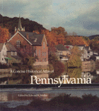

<body bgcolor="#FFFFFF" text="#000000" link="#0000FF" vlink="#CC0000" alink="#CC0000"><center><hr width="350" size="1" align="center" noshade>Explores the geographical dimensions of Pennsylvania’s past<hr width="350" size="1" align="center" noshade><p><a href="https://cdcshoppingcart.uchicago.edu/Cart/ChicagoBook.aspx?ISBN=9780877226727&&PRESS=temple" target="_top">Buy this book!</a> | <a href="https://cdcshoppingcart.uchicago.edu/Cart/Cart.aspx?PRESS=temple" target="_top">View Cart</a> | <a href="https://cdcshoppingcart.uchicago.edu/Cart/Cart.aspx?PRESS=temple" target="_top">Check Out</a></p><p></p></center><!--none//--><h1>Concise Historical Atlas of Pennsylvania</h1>
<h3>edited by Edward K. Muller</h3>
<P>paper 0-87722-672-5 $35.95, Nov 89, <FONT COLOR=#990033>Out of Stock Unavailable</FONT>
<BR> 48 pp
</P><p>This concise historical atlas explores the geographical dimensions of Pennsylvania’s past. Excerpted from the comprehensive Atlas of Pennsylvania, it traces five themes that structured the changing historical geography of the Commonwealth: agricultural settlement, industrialization, cultural pluralism, urbanization, and connections to the world beyond Pennsylvania. From ancient Indian cultures to the most famous Civil War campaign; from trading disputes between Swedish and Dutch settlers to the activities of organized labor in the nineteenth and early twentieth centuries; from the establishment of the first colleges to the oil rush begun by Edwin Drake in 1859: this 48-page paperback provides a visual interpretation of Pennsylvania’s past from a wide range of perspectives.
<BR>&nbsp;<H2>About the Author(s)</H2>
<P><b>Edward K. Muller</b> is Associate Professor of History at the University of Pittsburgh.</P>
<P>Contributors: W. Fred Kinsey III, James B. Richardson III, Ann Marie Dykstra, Van Beck Hall, Richard O’Connor, Wilbur Zelinsky, Robert G. Doherty, William F. Trimble, Philip Scranton, Louise Bern, Paul E. Doutrich, and the editor.</P>
<BR><H2>Subject Categories</H2>
<p><A HREF="/tempress/philly.html" TARGET="_top">Philadelphia Region</a>
<BR>
</p>
<p align="center"><a href="https://cdcshoppingcart.uchicago.edu/Cart/ChicagoBook.aspx?ISBN=9780877226727&&PRESS=temple" target="_top">Buy this book!</a> | <a href="https://cdcshoppingcart.uchicago.edu/Cart/Cart.aspx?PRESS=temple" target="_top">View Cart</a> | <a href="https://cdcshoppingcart.uchicago.edu/Cart/Cart.aspx?PRESS=temple" target="_top">Check Out</a></p><p><font face="Arial" size="1"><a href="copyright.html" onMouseOver="window.status='Web Copyright Policy';return true;" onMouseOut="window.status=''" title="Web Copyright Policy">&copy;</a> 2015 <a href="http://www.temple.edu" target="new" onMouseOver="window.status='Link to Temple University home page';return true;" onMouseOut="window.status=''" title="Link to Temple University home page">Temple University</a>. All Rights Reserved. http://www.temple.edu/tempress/titles/536_reg.html</font></p>